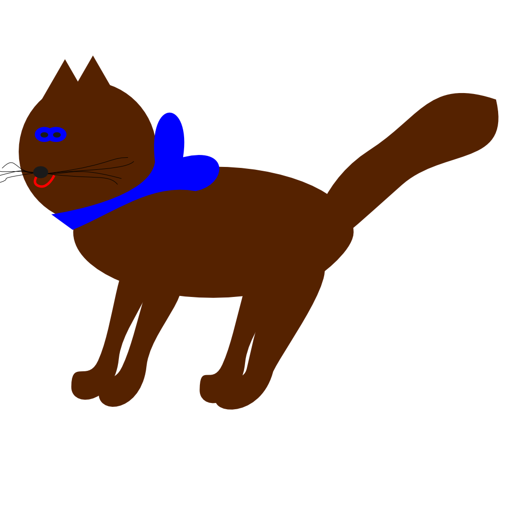

Your favorite lesson

When I was a kid , I was taught to write by teachers who-for the most part-showed more interest in what form my final product took than the interest they showed my writing process. "Write an essay," or "Write a book report," or "Write a story," or "Write a poem"-these are the products I remember being asked to complete as a student writer.
Your favorite book

I have read a lot of interesting books, but my favorite book is "The Adventures of Tom Sawyer" by Mark Twain. This well known book is popular with the children all over the world. The main character of the book is Tom Sawyer, who lived in a small town on the Mississippi River. He was a boy with a wild imagination. He liked to play games with his friends.
Your favorite teacher

There have been many people who have influenced me and those who have set great examples in my life. Many of those people were teachers that I have had from Kindergarten to the present time. If I had to choose one who has had the greatest influence, it would have to be Mrs. Gullion at Lilburn Elementary School in Lilburn, GA. She put much effort and time in teaching music.